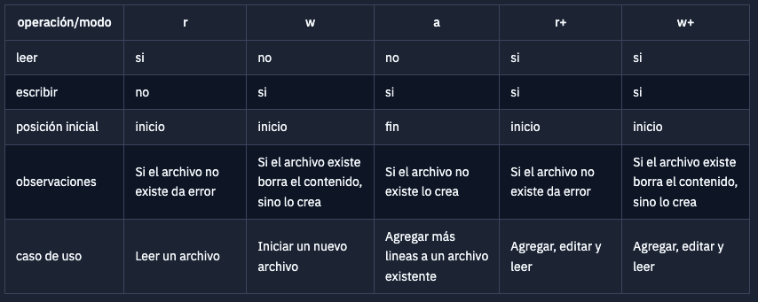
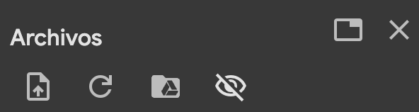
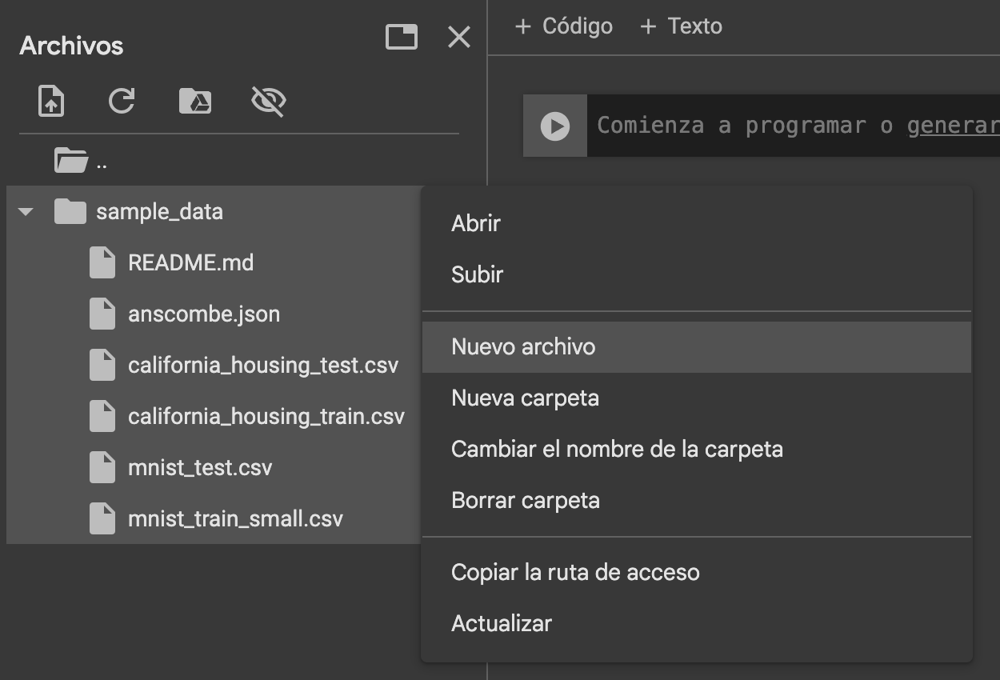
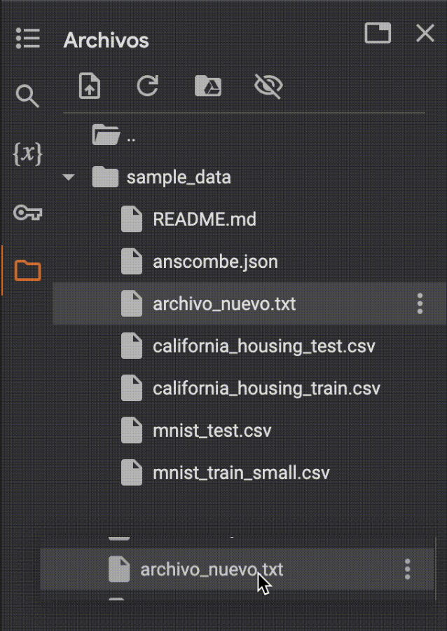

def convertir_a_int(ingreso_usuario):
try:
return int(ingreso_usuario)
except ValueError:
print("El valor ingresado no es un número")
convertir_a_int("cuarenta")El valor ingresado no es un númeroCuando un programa se está ejecutando los datos están en la memoria, pero cuando el programa termina los datos se pierden.
Para almacenar los datos de forma permanente se hace uso de archivos. Cada archivo se identifica con un nombre único dentro de directorio o carpeta en que se encuentre. Por ejemplo dentro la carpeta Documentos puede existir solo un archivo con el nombre Apuntes.txt.
Los archivos se utilizan para organizar los datos e intercambiarlos para distintos fines. El modo de trabajar con archivos es como trabajar con libros, se pueden abrir, leer, escribir y cerrar. Además se puede leer en orden o secuencialmente o yendo a un lugar específico.
Toda la organización de las computadoras está basada en archivos y directorios.
En python para abrir un archivo utilizamos la función open
ruta_archivo = "alumnos.txt"
archivo = open(ruta_archivo)Esta función intentara abrir el archivo “alumnos.txt” y si tiene éxito en la variable archivo quedara un tipo de dato que nos á manipularlo.
La operación más frecuente con los archivos es leerlos de forma secuencial
archivo = open(ruta_archivo)
línea = archivo.readline()
while línea != '':
# hacer algo con la línea
línea = archivo.readline()
archivo.close()Este último bloque de código lee todas las líneas (renglones) del archivo hasta que no queden más.
La variable archivo, que mencionamos más arriba como un “tipo de dato que nos permitirá manipularlo” guarda cuál es la siguiente posición que debe leer y cuando se ejecuta archivo.readline() lee esa posición y avanza una posición más.
La función close() cierra el archivo, esta operación es importante para mantener la consistencia de la información. Volveremos más adelante sobre este tema.
Ejemplo “alumnos.txt”
DNI;Nombre;Nota
45000001;Mariana Szischik;9
46000001;Emilia Duzac;8
46000001;Lucia Capon;9En el ejemplo anterior leímos el archivo línea por línea, pero existe otra forma de leer un archivo. Veamos otro ejemplo.
archivo = open(ruta_archivo)
líneas = archivo.readlines()
archivo.close()
for línea in líneas:
# hacer algo con la línea
print(línea)línea número 0
línea número 1
línea número 2
línea número 3
línea número 4 ¿Que diferencias hay entre el ejemplo de más arriba y éste?
La diferencia principal y que condiciona el resto de los cambios es que en lugar de leer línea por línea utilizamos la función readlines(). Esta función lee todo el contenido del archivo y devuelve una lista donde cada elemento de la lista es un renglón. Por otro lado se llama a la función close() inmediatamente después de leer todo el archivo. ¿Por qué? ¿Te animás a analizar todas las diferencias?
read(): Lee todo el archivo y lo devuelve como una cadena de texto.readline(): Lee una línea del archivo y la devuelve como una cadena de texto. Cuando se llega al final del archivo, devuelve una cadena vacía.readlines(): Lee todas las líneas del archivo y las devuelve como una lista de cadenas de texto.Python también tiene métodos para escribir archivos, los más comunes son:
write(): Escribe una cadena de texto en el archivo.writelines(): Escribe una lista de cadenas de texto en el archivo.ruta_archivo_nuevo = "saludo.txt"
archivo = open(ruta_archivo_nuevo, 'w')
archivo.write("Hola!\n")
archivo.writelines(["¿Cómo estás?\n", "Espero que bien.\n"])
archivo.close()En este ejemplo se puede ver el uso de \n. Este caracter es lo que indica a los medios de salida de información que lo que se escribió finaliza con una nueva línea. Ninguno de los métodos de escritura agrega automáticamente un salto de línea al final de lo que se escribe, a menos que se lo indiquemos explícitamente.
Cuando leemos un archivo tenemos que tener en cuenta que el último caracter de cada línea va a ser \n
Pero no todos los archivos pueden ser escritos, por ejemplo los archivos que se encuentran en modo lectura (‘r’). ¿De qué depende? Depende del tipo de acceso con el que se abrió el archivo.
Cuando se abre un archivo hay que especificar para qué lo estamos abriendo, las opciones en general son: leer o escribir. Por defecto, si no especificamos nada, tal como vimos en los ejemplos anteriores, se abre para leer.

Veamos ejemplos de los casos más comunes
Ejemplo Write (w)
ruta_archivo_nuevo = "alumnos_nuevo.txt"
archivo = open(ruta_archivo_nuevo, 'w')
for x in range(5):
# hacer algo con la línea
archivo.write(f"línea número {x} \n")
archivo.close()Ejemplo Read (r)
archivo = open(ruta_archivo_nuevo, 'r')
líneas = archivo.readlines()
archivo.close()
for línea in líneas:
# hacer algo con la línea
print(línea)Ejemplo Append (a)
archivo = open(ruta_archivo_nuevo, 'a')
archivo.write("línea número 5 \n") # agrega una nueva línea al final del archivo
archivo.close()Al terminar de trabajar con un archivo, es importante cerrarlo, por diversos motivos: en algunos sistemas los archivos sólo pueden ser abiertos de a un programa por la vez; en otros, lo que se haya escrito no se guardará realmente hasta no cerrar el archivo.
archivo = open(ruta_archivo)
líneas = archivo.readlines()
archivo.close()Cuando abrimos un archivo, queremos dejarlo abierto siempre la menor cantidad de tiempo posible. Si abrimos un archivo y no lo cerramos, estamos ocupando recursos del sistema que podrían ser utilizados por otros programas. Por lo que tenemos que pensar muy bien la forma de armar nuestro código para que los archivos se abran y cierren sólo cuando los necesitamos usar.
Una forma de asegurarse de que un archivo se cierre es utilizar la sentencia with. Esta sentencia se encarga de cerrar el archivo automáticamente al finalizar el bloque de código que se le pasa.
with open(ruta_archivo) as archivo:
líneas = archivo.readlines()
# Acá el archivo ya se cerró sólo¿Te animás a probar que pasa si intentas escribir en un archivo que fue abierto para lectura (‘r’) y a leer en uno que fue abierto para escritura (‘w’)?
Veamos un ejemplo en el que trabajaremos con dos archivos.
Ejemplo Obtener el promedio de un archivo de notas recibido por parámetro y guardarlo en un nuevo archivo llamado “promedio.txt”
Ejemplo de notas.csv:
fecha;nota
15/10;4
30/10;7
15/11;10
30/11;5# Abrimos el archivo de notas
def calcular_guardar_promedio(ruta_notas): # La función puede recibir "notas.csv"
archivo = open(ruta_notas, 'r')
líneas = archivo.readlines()
archivo.close()
# Leemos línea por línea cada nota
suma_notas = 0
cantidad_notas = 0
for línea in líneas[1:]: # la primer línea no contiene datos, solo los nombres de los campos
datos = línea.strip('\n').split(";")
nota = datos[1] # nos quedamos con la nota
suma_notas += int(nota)
cantidad_notas += 1
# Guardamos el promedio en un nuevo archivo
ruta_archivo_promedios = "promedio.txt"
archivo = open(ruta_archivo_promedios, 'w')
archivo.write(str(suma_notas/cantidad_notas))
archivo.close()Otra forma de resolverlo podría haber sido:
# Abrimos el archivo de notas
def calcular_guardar_promedio(ruta_notas): # La función puede recibir "notas.csv"
with open(ruta_notas, 'r') as archivo: # usamos with open
líneas = archivo.readlines()
# Leemos línea por línea cada nota
notas = []
for línea in líneas[1:]: # la primer línea no contiene datos, solo los nombres de los campos
datos = línea.strip('\n').split(";")
nota = datos[1] # nos quedamos con la nota
notas.append(int(nota))
# Guardamos el promedio en un nuevo archivo
ruta_archivo_promedios = "promedio.txt"
with open(ruta_archivo_promedios, 'w') as archivo_destino:
archivo_destino.write(str(sum(notas)/len(notas)))Veamos el contenido del archivo “promedio.txt”
ruta_archivo = "promedio.txt"
archivo = open(ruta_archivo, 'r')
línea = archivo.readline() # o read
archivo.close()
print(línea)6.5En el ejemplo anterior hay al menos dos cosas que vale la pena remarcar: el uso de la función split()1 nos permite separar cada línea en una lista que tiene 2 elementos, a nosotros nos interesa el elemento que está en la posición 1, la nota; por otro lado también utilizamos la función strip()2, esto remueve el caracter de nueva línea \n.
Un detalle que no hay que evadir es cómo se recorre la lista teniendo en cuenta que la primer línea del archivo no nos interesa, ya que contiene los nombres de cada campo. Esto se explica en unidad 4.
En la sección anterior utilizamos para todos los archivos la extensión ‘.txt’ el uso de extensiónes es una convención, una manera de nombrar las cosas que nos da una idea de lo que hay en el contenido del archivo.
Comúnmente a los archivos que estuvimos usando como ejemplo se los nombra con la extensión ‘.csv’ las siglas de “comma separated values”3.
Para usar y crear archivos en Colab, se debe ingresar al último item del menú derecho, que tiene forma de carpeta.

Allí, con el menú interno de archivos vamos a poder:

También podemos crear un nuevo archivo usando el menú de “sample_data” (los tres puntitos) y seleccionando “Nuevo Archivo”.

El archivo luego hay que arrastrarlo fuera de la carpeta de sample data para poder usar como ruta su nombre directamente.

De esta forma, podemos abrirlo usando como ruta su nombre: open("archivo_nuevo").
Si hacemos doble clic en el archivo, podemos verlo. Si además el archivo es del tipo txt, podemos editarlo. Los archivos CSV no pueden editarse, pero un truco sería cambiarle la extensión a txt, editarlo, y luego volver a cambiarle la extensión a CSV. No es lo ideal, pero nos permite realizar cambios manuales en un archivo para poder trabajar con mayor comodidad.
¡Los archivos creados en Colab no se guardan para siempre!
Te recomendamos que si los vas a necesitar o vas a querer trabajar con ellos en un futuro, los descargues. Lo podés haciendo con clic derecho sobre el archivo, o con el menú del mismo (los tres puntitos).
Con estos tips, ya podrías manejarte correctamente para hacer la guía de archivos en Colab.
Cuando cometemos un error de tipeo o utilizamos mal una sentencia el intérprete nos muestra un error de sintaxis. En la práctica lo vemos como un SintaxisError, este tipo de errores se los llama errores sintácticos, la manera de resolverlo es revisar la sintaxis y corregirlo.
Ejemplo: Función mal definida
deff incrementar(n):
return n + 1 File ...., line 1
deff incrementar(n):
^^^^^^^^^^^
SyntaxError: invalid syntaxCuando un programa se está ejecutando y ocurre un error se crea una excepción, normalmente el programa detiene su ejecución y se imprime un mensaje. Este tipo de errores se los llama errores de ejecución, vamos a ver como manejarlos.
Ejemplo: División por cero
dividendo = 10
divisor = 0
resultado = dividendo/divisor ---------------------------------------------------------------------------
ZeroDivisionError Traceback (most recent call last)
File ...
1 dividendo = 10
2 divisor = 0
----> 3 resultado = dividendo/divisor
ZeroDivisionError: division by zeroEjemplo: Acceso a un elemento que no existe
lista = ["a","b"]
segundo_elemento = lista[2]---------------------------------------------------------------------------
IndexError Traceback (most recent call last)
File /...
1 lista = ["a","b"]
----> 2 segundo_elemento = lista[2]
IndexError: list index out of rangeEjemplo: Abrir un archivo que no existe
archivo = open("archivo_falso.txt","r")FileNotFoundError Traceback (most recent call last)
File ...
----> 1 archivo = open("archivo_falso.txt","r")
FileNotFoundError: [Errno 2] No such file or directory: 'archivo_falso.txt'En cada caso el mensaje de error tiene dos partes, la primera indica el tipo de error:
ZeroDivisionErrorIndexErrorFileNotFoundErrorLa segunda tiene una descripción:
division by zerolist index out of rangeNo such file or directoryAdemás nos da información contextual que puede indicar en la ejecución de qué línea se dio el error:
----> 3 resultado = dividendo/divisor.----> 2 segundo_elemento = lista[2].----> 1 archivo = open("archivo_falso.txt","r").En algunas ocasiones es parte del programa manejar operaciones que puedan lanzar este tipo de excepciones sin que el programa detenga su ejecución, para estos casos Python nos provee las sentencias tryy except.
Ejemplo
dividendo = 10
divisor = 0
try:
resultado = dividendo/divisor
except ZeroDivisionError:
print("No se puede dividir por cero.")No se puede dividir por cero.Como se ve en el ejemplo se “envuelve” la operación que puede generar ese tipo de excepción para que lo que resulte de esa operación se pueda controlar. Como vimos más arriba hay distintos tipos de excepciones, la lista completa se puede ver en excepciones.
Es extremadamente importante que el bloque try sólo tenga dentro la porción de código que tiene posibilidad de romper. No es correcto colocar todo nuestro código dentro del try, porque si tenemos varios posibles puntos de falla, deberían tratarse por separado. Adicionalmente, es una mala práctica tener demasiado código dentro de un bloque try, cuando es innecesario.
Las validaciones son técnicas que permiten asegurar que los valores con los que se vaya a operar estén dentro de determinado conjunto de posibilidades o que tengan ciertas características.
Si bien quien invoca una función debe preocuparse de cumplir con las precondiciones de ésta, si las validaciones están hechas correctamente pueden devolver información valiosa para que el invocante pueda actuar en consecuencia.
También se debe tener en cuenta qué hará nuestro código cuando una validación falle, ya que queremos darle información al invocante que le sirva para procesar el error. El error producido tiene que ser fácilmente reconocible.
Ejemplo:
def convertir_a_int(ingreso_usuario):
try:
return int(ingreso_usuario)
except ValueError:
print("El valor ingresado no es un número")
convertir_a_int("cuarenta")El valor ingresado no es un númeroEn Python también tenemos una forma de arrojar nosotros un error, es decir, hacer que la función falle y devuelva un mensaje de error. Esto se hace con la sentencia raise. No lo vemos en la materia, pero se puede leer más en la documentación de Python.
Arrojar o levantar excepciones es un tema complejo, porque además de arrojarlas, debemos ser capaces de capturarlas y manejarlas. Es por esto que no se incluye en el temario de la materia.
Una misma línea podría arrojar varios tipos de excepciones distintos. Existe una forma de atajar varios casos de error sobre un mismo try, pero no lo vemos en la materia. Cada par try-except debería hacer referencia a un sólo tipo de error.
try.A continuación se presenta una tabla con los errores más comunes que se pueden encontrar al programar en Python.
| Tipo de error | Descripción | Más Información |
|---|---|---|
| SyntaxError | Error de sintaxis | Suele ser un error de tipeo o de uso incorrecto de una sentencia |
| ZeroDivisionError | División por cero | Se produce cuando se intenta dividir por cero |
| NameError | Variable no definida | Se produce cuando se intenta utilizar una variable que no fue definida |
| IndexError | Índice fuera de rango | Se produce cuando se intenta acceder a un elemento de una secuencia, que no existe |
| FileNotFoundError | Archivo no encontrado | Se produce cuando se intenta abrir un archivo que no existe |
| TypeError | Tipo de dato incorrecto | Se produce cuando se intenta realizar una operación con un tipo de dato incorrecto |
| ValueError | Valor incorrecto | Se produce cuando se intenta realizar una operación con un valor incorrecto |
| KeyError | Clave no encontrada | Se produce cuando se intenta acceder a un elemento de un diccionario que no existe |
| IOError | Error de entrada/salida | Se produce cuando se intenta realizar una operación de entrada/salida que no se puede realizar (por ejemplo, intentar acceder a un archivo) |